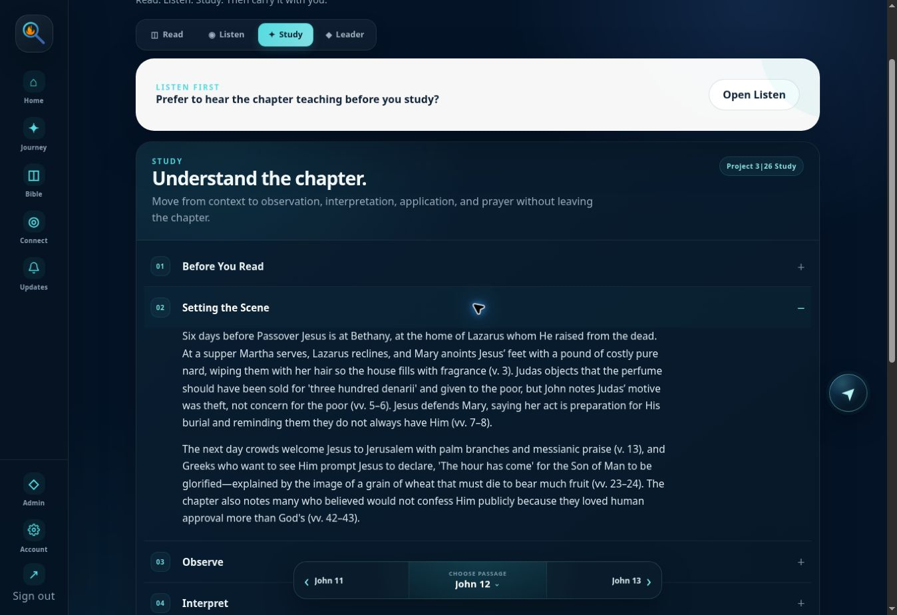
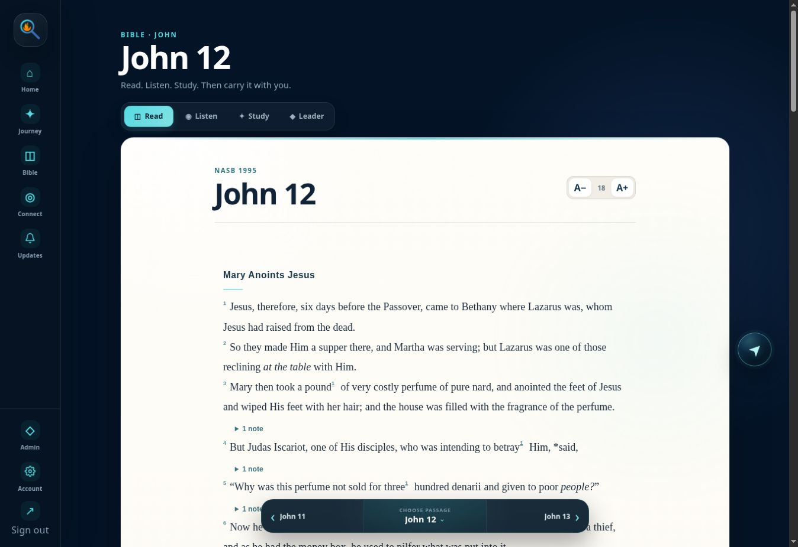
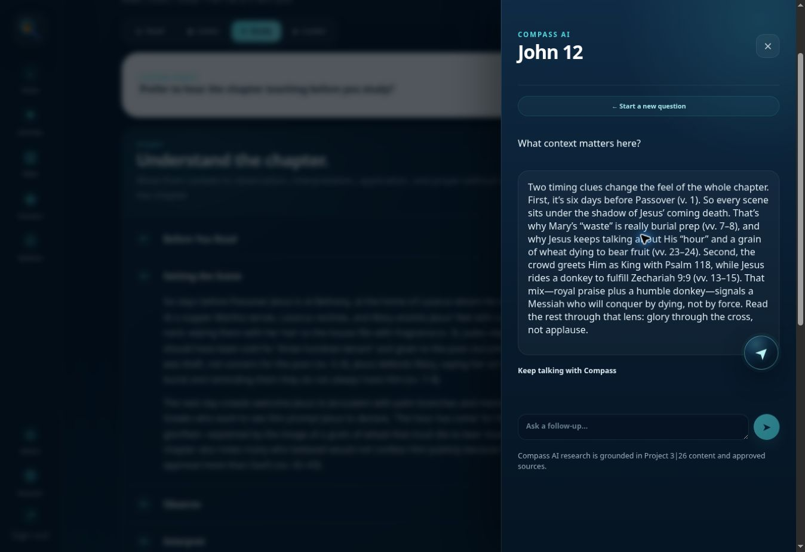
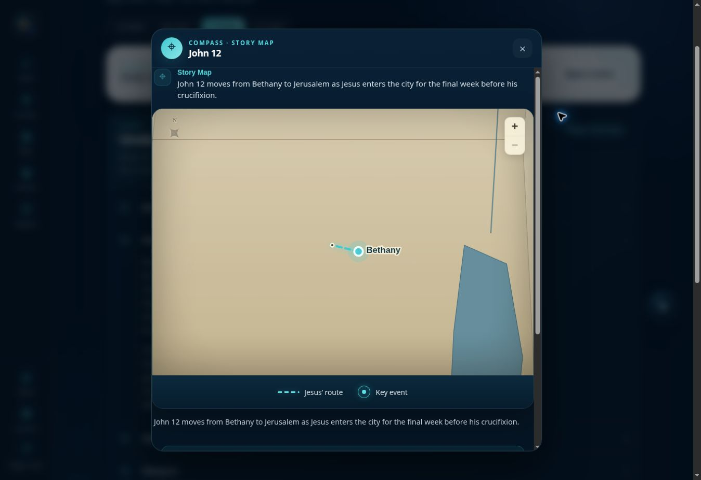

01
Study with a clear path.
Move naturally from context to observation, interpretation, application, and prayer.

Understand what you are reading
Read Scripture with the context, guidance, and tools that help it click.

One chapter. More clarity.
Move naturally from context to observation, interpretation, application, and prayer.

Compass
Compass helps you explore the chapter using Project 3|26’s curated content and approved sources.
Answers are generated with AI inside a guided, grounded study experience.
Story Maps
Places, routes, and regions turn names on a page into a world you can understand.

Why it exists
Project 3|26 gives everyday people a clear path through Scripture, one chapter at a time.
Dr. Brian CooperFounder, Project 3|26
Begin with John
Start with the Gospel of John, completely free.
Start John FREENo cost to begin.